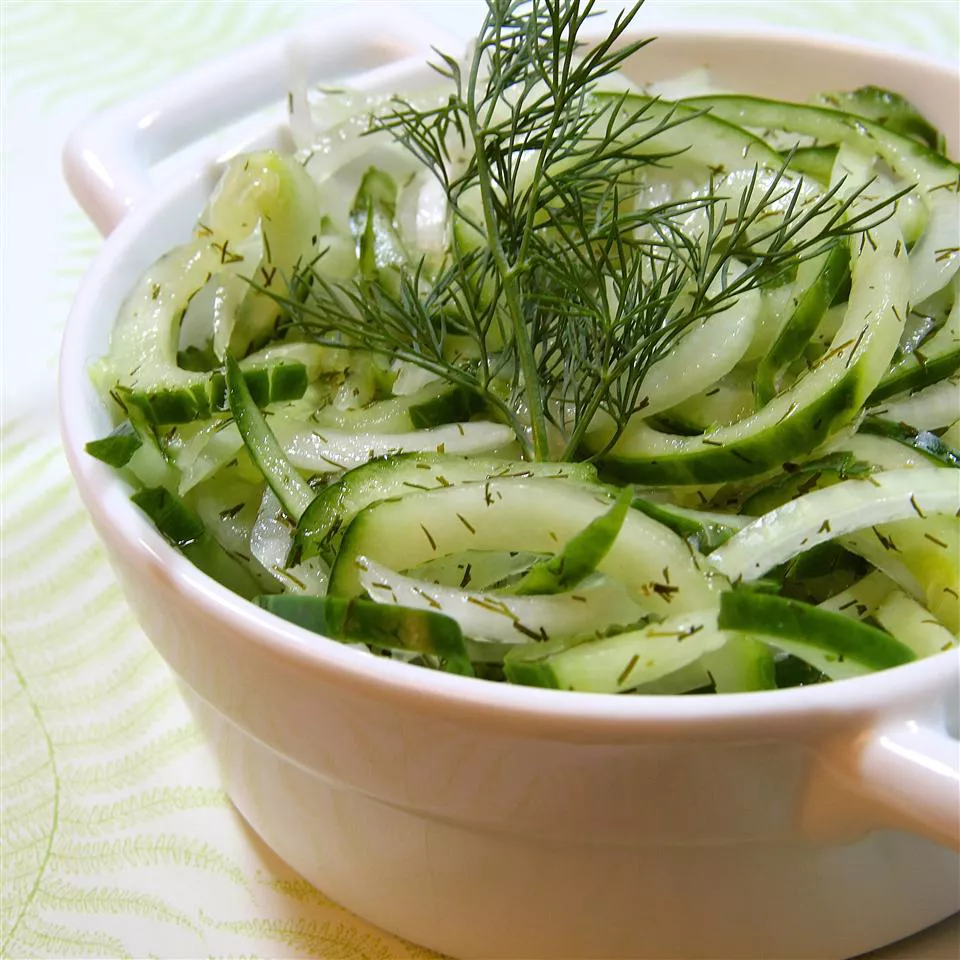

Cucumber Salad

Description
Here is some recipe that I stole off allrecipes.com. It looks pretty delicious and refreshing. I'll be learning all about it along with you. Since I am stealing this recipe
Ingredients
- Cucumber: Start with four thinly sliced cucumbers.
- Onion: A thinly sliced white onion lends flavor and texture.
- Vinegar: A cup of white vinegar gives the cucumber salad a bright flavor.
- Sugar: White sugar lends subtle sweetness.
- Water: You’ll need ½ cup of water.
- Dill: Dried dill takes the flavor up a notch.
Steps
- Toss the cucumber and onion slices together
- Boil the vinegar, water, and sugar
- Pour the vinegar mixture over the cucumbers and onions
- Stir in the dill and let marinate before serving